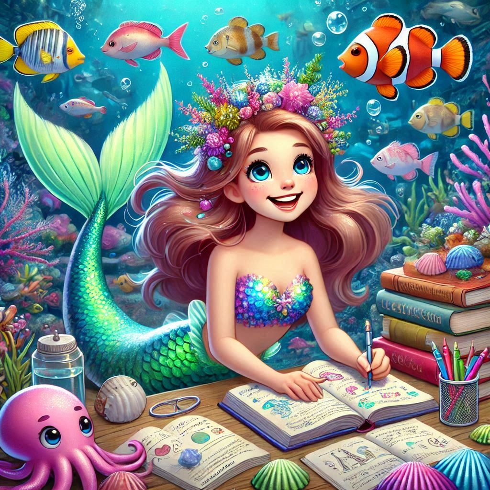

La Sirène Envoûtante
Plongez dans les profondeurs de l'océan et laissez-vous envoûter par la beauté mystique de cette sirène. Son chant mélodieux et son regard captivant vous transporteront dans un monde de rêves et de passions.
Découvrir
La Sirène Romantique
Découvrez l'histoire d'amour éternelle entre une sirène et un marin. Leur romance interdite transcende les océans et les étoiles, créant une légende qui perdure à travers les âges.
Découvrir

La Sirène Étudiante
Découvrez l'incroyable voyage de Hachley, une sirène qui a quitté les profondeurs de l'océan pour poursuivre son rêve de devenir pharmacienne. Entre deux mondes, elle utilise ses connaissances uniques pour sauver des vies et unir les océans et la terre.
Découvrir